A full wardrobe and nothing to wear. I lived that every morning, and it's a design problem, not a joke.
Most of us own far more than we wear. It's not bad shopping. We just can't see what goes with what. A shirt stays in the cupboard because nobody ever showed us what to pair it with.
So we repeat the same five outfits, and buy a new top because the old one "goes with nothing".
The insight that reframes it
The most useful number here isn't 82%. It's the gap between the two.
Nobody thinks "I have an information problem." They think "I'm just bad at clothes."
So nobody is searching for this app. There is no query for “help me see what goes with my green shirt.” It has to prove itself in the first thirty seconds, before anyone agrees they have a problem.
What ShadeMatch was, before any of this
ShadeMatch does five things. Here they are, in the order you meet them.
-
1
Photograph a garment
Take a photo or drop one in. The app finds the garment and its colour.
-
2
Colour combinations
Three colours for each piece that goes with it. A shirt gets three for trousers and three for shoes.
-
3
Men or women
Men's colours run darker. Women's run lighter and more playful.
-
4
Shopping links
Amazon, Myntra and Flipkart links appear with every result.
-
5
Pinterest button
Opens a search for the combination, so you can see it on real people.
It works, and it's live. But building something and understanding it are two different things, and I had five questions I couldn't answer.
- ?Who is this for, specifically?
- ?What is the moment they'd open it?
- ?Why would they open it a second time?
- ?Which of these five features is the product, and which are decoration?
- ?What would I cut?
The brief, written after the fact
Help people wear more of what they already own by answering one question, what goes with this? In under thirty seconds, with no setup.
Success isn't people using the app more. It's a shirt finally leaving the shelf.
One item in. A wearable answer out. No setup.
Everything else either helped with that one job or got in its way. Working out which was which was the real design work.
Single item capture
Photograph one garment. That's the whole input. No uploading your wardrobe, no tagging.
Three colours per piece
Photograph a shirt and you get three colours for trousers and three for shoes. The men or women setting shifts the palette.
Visualise before committing
The Pinterest link answers the question a colour swatch can't: what does this look like on a person? It's a quick way from a colour to a real outfit.
Save for later
An optional account lets you save a combination, so next time you already know what goes with that top. Nothing is required to use the app without it.
Next on my list: the marketplace links
Amazon, Myntra and Flipkart links still sit beside every result. My research says they make good advice feel like an ad, so taking them out is the first thing I'd change. The reasoning is in Ideation.
Everything either costs too much to start, or shows you clothes you don't own.
Four kinds of product try to help. The fifth option is no product at all. What's missing is one that answers the question at the moment you ask it.
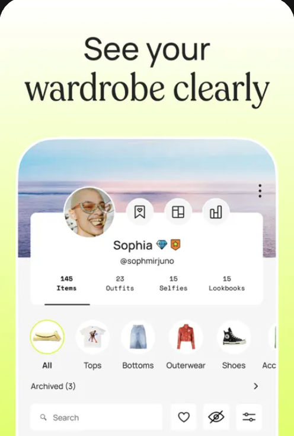
Wardrobe apps
The most complete answer. Add your whole wardrobe and the app builds outfits from what you own.
The setup comes first. Photographing and tagging a whole wardrobe takes hours, before you get a single answer.
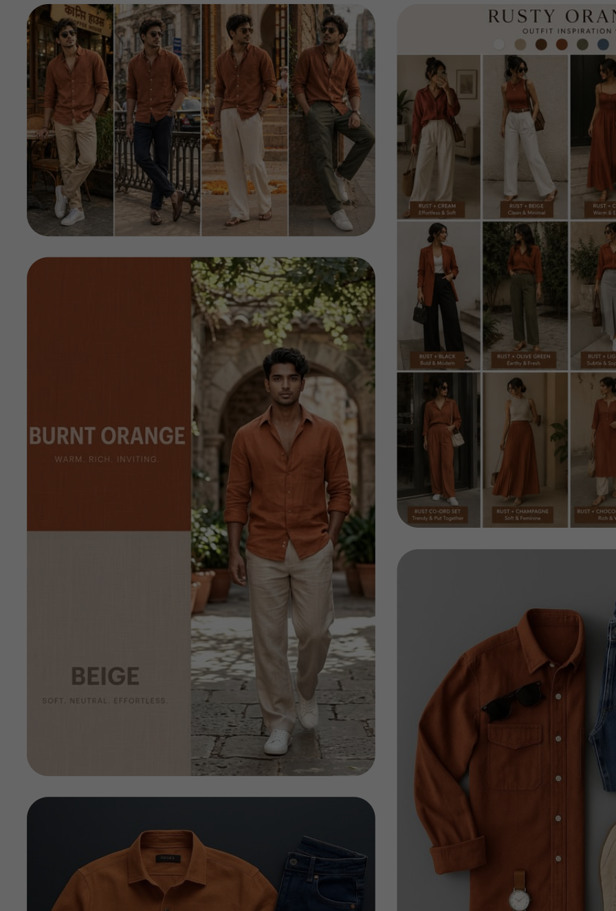
Unmatched for inspiration, and the only place that shows what a colour combination looks like on a real person.
It's all clothes you don't own. It shows what looks good, never what you can wear tonight. That gap is what ShadeMatch is for.
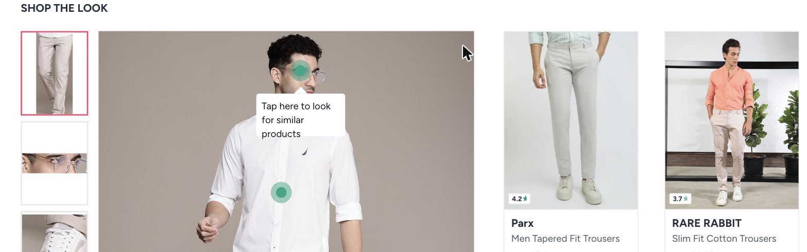
Marketplace styling
Good recommendations, shown right when you're ready to buy.
Every suggestion is something for sale. The app isn't asking "what goes with this?", it's asking "what else can we sell this person?" Shoppers know it, and a suggestion sitting next to a buy button gets trusted less, even when it's right.
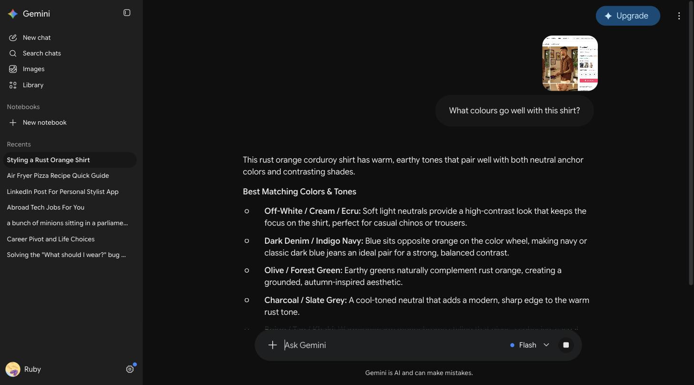
General AI chat
Free, immediate, capable. Upload a photo of a shirt, ask what goes with it, get a reasonable answer. The strongest competitor in the category and the least discussed.
Nothing persists. No memory of your wardrobe, no record of yesterday's question, no visual output, just text. It also needs the user to know they can ask, and to phrase it well. A capable tool with no product around it.
What this told me
The product had the right entry point.
The work was figuring out what else had to be true for that to matter.
I read what people said about the wardrobe apps they quit.
Method
No interviews for this one. I used two sources instead.
Community threads
AI pulled threads from fashion advice communities. I looked for how people describe the moment of not knowing what goes with something.
App reviews
AI pulled the 2 and 3 star reviews of the wardrobe apps I looked at, from the App Store and Play Store. I read through them. This is where people explain why they quit.
Honest opinions at volume, and a clear view of why competitors lose people.
No follow-up questions. Only people who bothered to post. The quiet majority who used an app happily never show up.
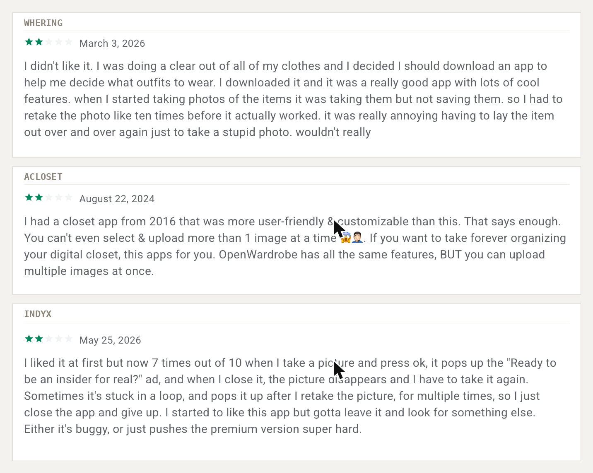
Three clusters
“I don't trust my own eye.”
The main feeling is self doubt, not confusion. People feel they are missing a skill everyone else has. They own clothes they like and have never worn, and can't say why.
→A second opinion with a reason. Not a verdict, an explanation they can carry forward.
“The setup costs more than the problem.”
Mostly from review mining. People start excited, upload fifteen to thirty items, then quit before the app has done anything useful. The work comes before the value, every time.
→Value at item one, not item one hundred.
“Everything is trying to sell me something.”
A weary suspicion of styling advice attached to commerce. People discount recommendations automatically when a buy button is present, not because the advice is wrong but because they can't tell whether it's for them or for the retailer.
→Advice with no motive. The recommendation has to be visibly disinterested to be usable at all. This cluster directly contradicts a decision in the original build.
The business case
India's fashion ecommerce market was worth roughly $25.6B in 2025, apparel at 54% of it, Myntra alone at about $12.5B GMV. It's not a small pond, and there's obvious money in sending qualified traffic into it.
Here's the catch. Affiliate links are the fastest way to earn, and taking them early would cost the one thing that makes people use the app: their trust. If people trust it, I can find ways to earn later. If they doubt it, I can't.
What drives apparel returns
Fit and sizing is about half. The other half is the failure this product speaks to: an item that arrived, was fine, and went with nothing the buyer owned.
Trust first, money second. Never the other way around.
Two people. One wardrobe problem, arrived at from opposite directions.
The clusters resolved into two people. One owns too much and wears too little. The other keeps buying to solve a problem buying can't solve. They meet at the same question: what goes with this? Aditi asks it at her cupboard, Rohan at checkout.
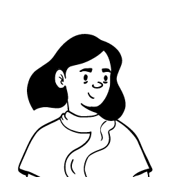
Aditi Sharma
- Loves items she has never worn
- Doesn't trust her own eye, or advice that sells
- An answer in seconds, not a system to maintain
- A reason with the answer, so she keeps what she learns
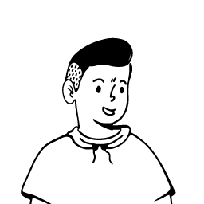
Rohan Iyer
- Buys single items with no plan for what they pair with
- Sees marketplace “complete the look” as an ad
- A check before buying: what colours go with this?
- An answer in seconds, because he won't invest more
Why Aditi is primary
Rohan is the more commercially attractive user. He's at the point of purchase, already spending, one click from an affiliate link. Designing for him monetises immediately. I prioritised Aditi anyway, for three reasons.
Has the problem every morning.
Has it when he shops.
A daily problem builds a habit, an occasional one builds a bookmark.
Keeps commerce out of the product.
Pulls the product toward commerce.
Cluster 3 says commerce is exactly what makes styling advice unusable.
“What goes with this thing I own” can also answer “what goes with this thing I'm about to buy”, with almost no extra design.
A purchase time tool has nothing to say at 8am on a Tuesday.
The reverse isn't true.
Aditi became the design target.
Rohan became the expansion case: not designed for now, and not designed against.
Redefined challenge
My first version treated this as a colour problem and solved it with a colour formula. It isn't one. It's a confidence problem. People don't just need an answer, they need an answer they understand.
The hardest part was subtraction.
Most design projects start with nothing and add. This one started full. ShadeMatch already did five things, and my job was to decide which were the product and which were just clutter.
The biggest cut was the wardrobe upload: it would have made ShadeMatch the same as the wardrobe apps.
The three questions everything had to pass
Does this serve the moment of getting dressed? Not shopping, not browsing. If a feature's best use case was “while browsing Myntra,” it was out of the core however well it worked.
Does it cost the user anything before it gives them something? Setup cost is what kills this category. Accounts, uploads, quizzes and onboarding were out unless they earned their cost inside the same session.
Does it survive the trust test? Would Aditi believe this recommendation if she knew exactly how the product made money? If not, it was damaging the product even while working correctly.
The audit below is these three gates applied to what shipped. One feature failed outright and is next to change.
Auditing what already existed
| Feature, as built | Verdict | Reasoning |
|---|---|---|
| Single garment photo capture | Core, keep | The strongest thing in the product. Near zero setup is the entire competitive position. |
| Colour combination suggestions | Trimmed | The first version offered colour theory schemes: monochromatic, complementary and more. I streamlined it to three colours per piece because so many options felt like clutter. It still gives colours without reasons, which answer the question once instead of teaching the user to answer it. |
| Amazon, Myntra and Flipkart links | Kept, revisit | Kept because it is the easiest way to go and buy a colour. Fails question 3 outright. Attaches a commercial motive to advice that only works without one. The most consequential change I would make next. |
| Pinterest link | Keep, promote | Underrated in the original build. The only thing answering “what does this look like on a person.” |
Why the marketplace links are the next thing I would change
The one decision I haven't acted on yet, so here's the reasoning.
They make it easy to act: tap a colour and go straight to buying it. They're useful too, because only you know what is in your wardrobe. If you don't own the colour it suggests, the links are how you find it.
Cluster 3 is unambiguous. Trust here isn't a nice to have, it is the product.
The entire reason Aditi would choose this over Myntra's “Complete the Look” is the absence of a motive.
It would snowball if I ever added affiliate earnings. Once money depends on clicks, every later decision starts leaning toward the click. Removing the links first takes that pressure away before it starts.
What I would do: move them behind a deliberate tap, so you only see them when you ask. Then seeing what exists commercially is a service rather than an ad, because the user asked. I would test it with the commerce A/B in Measuring success before committing.
What got cut, and what never made it in
| Idea | Verdict | Why it didn't survive |
|---|---|---|
| Full wardrobe upload and outfit generation | Cut | I removed this from an earlier version. It made ShadeMatch the same as the wardrobe apps, and setup is the category's cause of death. It would have traded the product's one advantage for its competitors' one weakness. |
| Account and login before first use | Cut | Fails question 2. Value has to arrive before commitment, not after. |
| Style quiz onboarding | Cut | Six taps before a useful output, for a user who hasn't agreed she has a problem. Every tap is a leak. |
| Social feed and outfit sharing | Cut | Solves a problem Aditi doesn't have. She isn't short of inspiration, she's short of confidence about her own cupboard. |
| Skin tone colour analysis | Deferred | Valuable, and a different product. Needs accuracy I can't validate and carries real harm risk if wrong. |
| Occasion filter for work, casual and evening | Deferred | Good idea, but adds a decision to a flow whose promise is removing one. Second version. |
What the ideation changed
Two things came out of this pass.
01The options came down
So many options felt like clutter.
By instinct, not by testing.
It fits the research: Aditi has a two minute window and low confidence, and a long menu hands the same decision back in a new wrapper. I haven't tested that.
02The app stays blind to your wardrobe
ShadeMatch only suggests colours. It can't know what you own, and only you do. If you don't own a colour, the links help you find it. A wardrobe upload would fix that, but it would make ShadeMatch the same as the wardrobe apps, so I'm still stuck on this one.
Checking my own app against what I'd learned.
ShadeMatch had no recruited testers behind this section either. What I ran was a structured self evaluation, walking through the live app screen by screen and checking it against the research findings from the competitive analysis, the voices, and the personas.
Method
Three questions per screen:
What it caught
The output gives an answer with no reason attached.
A combination arrives with no explanation, which doesn't help a user whose real problem is confidence.
The shopping links change how the whole app reads.
Once you see them, every suggestion looks like a sales pitch. This is exactly what Cluster 3 warned me about, and I only saw it by looking at my own app like a stranger.
A swatch doesn't answer “what does that look like on me.”
The Pinterest link, treated as a minor extra, is the only thing that actually answers this.
Revised design goals
The evaluation didn't change what the product is. It changed three things about how it has to behave.
| Original goal | Revised goal | Trigger | |
|---|---|---|---|
| Suggest colours that match | → | Suggest colours that match and say why in one line. Every output must teach, not just answer | Failure 1 |
| Help users find matching items | → | Help users match colours to clothes they already own. Commerce only on request, never volunteered | Failure 2 |
| Show the recommended combination | → | Let them see it on a person before committing. Abstract palettes don't convert to worn outfits | Failure 3 |
One photo to an answer.
The whole product is one short loop. Aditi is at her cupboard with two minutes, and every extra screen is a chance to lose her.
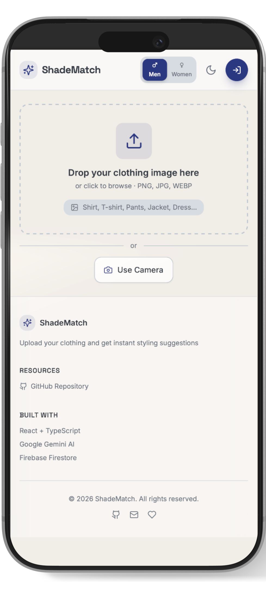
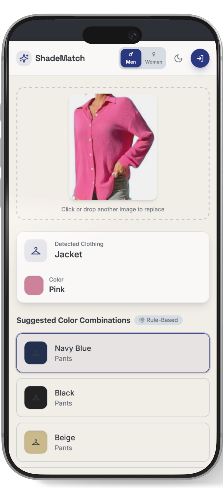
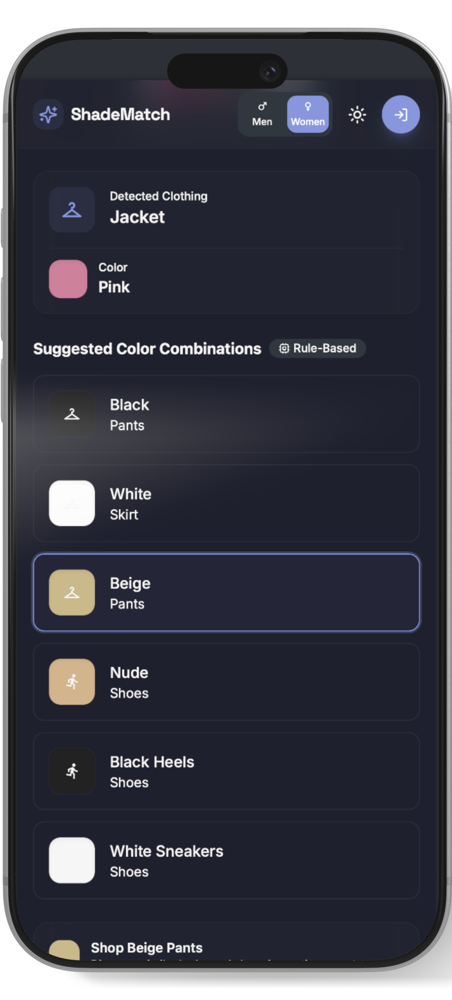
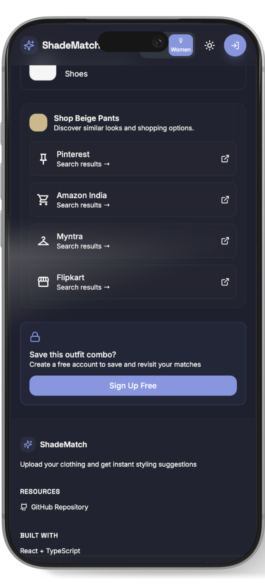
Capture
You land on one screen. Take a photo with your camera, or drag and drop an image. No home screen, no login, no setup.
No account until someone has a reason to want one. Every extra screen before the photo loses people, especially the ones who don't yet think they have a problem. Landing straight on the photo screen says: this costs nothing to try.
The only structural advantage over wardrobe apps, and worth more than everything an account would enable.
Detection
The garment's dominant colour is identified and shown back, named rather than just swatched. “Rust orange.” “Sage.”
Show what the app saw before it recommends anything. If it got the garment wrong, everything after is wrong, and the user should catch that early. Naming the colour helps too. A user who learns her shirt is “rust”, not “orange-ish”, keeps that.
Trust. When an AI app shows its work where that's easy, people believe it more when it can't.
Recommendation
Visualise
One tap opens Pinterest, already searched for the specific combination, showing real people wearing it.
The original plan was to show both garments together in one image, so you could actually see the combination instead of imagining it.
I hit technical issues getting that to work reliably.
So I fell back to something simpler: a direct link to Pinterest, showing real people wearing that exact colour combination. Not as tailored as a custom generated image. But faster to ship, and it gets the person to a real picture today.
Sending people to another app means some won't come back. That's the price of the fallback. Getting the image inside ShadeMatch is the next thing I'd fix.
The easiest number to track would have ruined this app.
The easiest thing to count is clicks to Amazon, Myntra and Flipkart. It's exact and it ties straight to money. And chasing it would undo everything that makes the app work.
North star metric
Those all go up when an app is confusing. The goal is a shirt leaving the cupboard.
I can't see what someone actually wears. So the best stand-in is one optional tap when they come back: “Did you wear it?” Asking costs a little effort, and this app promises no effort. So I would only ask on a return visit, and never block anything. I'd accept some missing answers to keep it effortless. It's a trade-off I'd want to test.
Supporting goals
Share of first visits that get a suggestion. If people leave before the first answer, the “no setup” promise failed.
Typical time from opening the app to the first suggestion. Aditi has two minutes. Slower than that and the mirror wins.
Number of different garments used in accepted suggestions, per person, per month. The only measure of the real problem, not a stand-in for it.
Show 3 more measuresHide
Share of visits where people read the reason, once reasons are built. A reason nobody reads isn't working.
Share of returning users who reuse a saved combination without a new photo. The strongest sign: they learned something and kept it.
How often people accept a suggestion, with shopping links versus without. Shows whether shopping links hurt trust (Cluster 3).
Warning signs: how I'd know it's going wrong
Three things I'd treat as failure regardless of what the North Star did.
| Guardrail | Healthy range | Warning sign |
|---|---|---|
|
Sessions per day
This isn't an app to use often. Rising use means it isn't answering the question.
Warning starts
0310
HealthyWarning
|
1 to 3 a day | More than 3 a day |
|
Outbound shopping clicks as a share of sessions
Means people often don't own the colours suggested, or advice and shopping are starting to blur.
|
Staying flat, or falling | Any rise |
|
Acceptance rate over a user's lifetime
Means the recommendations aren't fitting a real wardrobe and people are learning to ignore them.
|
Staying steady, or rising | Any fall |
How I'd validate
Usability, moderated. 5 to 8 people matching Aditi, on their own wardrobe. Two questions: does the reason line change whether they'd wear it, and do they notice the missing shopping links.
Diary study, 2 weeks. 6 participants logging what they wore. The only method that can answer whether unworn garments actually moved, which is the entire point.
A/B on commerce placement. The highest value test available: volunteered shopping links against links shown only on request, measured on acceptance rate rather than clicks. The decision I'd most want proven right or wrong.
What I can claim, and what I can't.
ShadeMatch is live but it isn't a business, and there's no meaningful usage data behind it. Here's what the work actually produced.
What the audit showed me
What is not validated
The outcome
A defensible competitive position, an audit that found one of the five features working against the product, a decision record for every call, and a measurement framework with counter metrics.
Proof that anyone's wardrobe changed.
What auditing my own product taught me.
When building gets quick, I have to add the thinking back on purpose.
Several decisions in ShadeMatch were made by default rather than badly. The marketplace links weren't a monetisation strategy, they were the obvious thing to include. When building is expensive, the expense forces justification, because you don't spend three weeks on a feature you can't defend. When it takes an afternoon, nothing forces it, and the rigour has to come from somewhere else on purpose. I don't think I'd have learned that in the abstract.
I had an edge and didn't know it.
ShadeMatch's strongest point is that it only asks for one photo, which is exactly what its competitors get wrong. But I never chose that. I stumbled into it. You can't tell getting it right by luck from getting it right on purpose until someone asks you why. The research turned a lucky accident into a choice I can defend, and I know not to give it up.
The same feature is helpful or manipulative depending on who starts the conversation.
Shopping links beside a recommendation are an ad. The identical links, shown only when the user asks, are a service. Only the initiator changed. I used to evaluate features on what they do. Now the first question is who asked for it, because that sets the meaning more than the function does.
Choose what to measure before anyone starts counting.
Once the easy number is in place, it starts winning every argument. So the harder, blurrier number that measures real value has to be chosen early.
Success here means the user needs me less.
The real outcome is that Aditi learns which colours work and gradually stops opening the app. Good for her, structurally terrible for a retention metric, and I don't have a clean answer. I've stopped treating it as a flaw in my reasoning and started treating it as the actual product question: what does a tool designed to make itself unnecessary sell, and to whom?
What I'd do next
The gap between this case study and a real product is one study: two weeks, six people, a diary of what they actually wore. Everything here is reasoning, and reasoning is cheap. The only question that matters is whether a garment that sat unworn for two years came off the shelf.
The second thing I'd do is audit the colour engine itself. Writing this, I noticed I'd spent weeks interrogating every decision around the recommendation and none on whether the recommendation is any good. A pointed lesson about where I'm comfortable thinking and where I'm not.
Sources for the statistics
| 82% of US wardrobes unworn, 26% estimated against 88% actual | Movinga wardrobe study, 2018. 18,000 households across 20 countries. |
| About an hour a week deciding what to wear, five months of a working life. 45% find it stressful | Simon Jersey survey, 2019. 2,000 respondents, UK. |
| Online apparel returns 20 to 40% against a 20% ecommerce average. Fit and sizing is about half of returns | NRF 2025 Retail Returns Landscape. |
| India fashion ecommerce around $25.6B in 2025, apparel 54%, Myntra around $12.5B GMV | ECDB, 2025. |